PimpMyBike: biking at night — with style
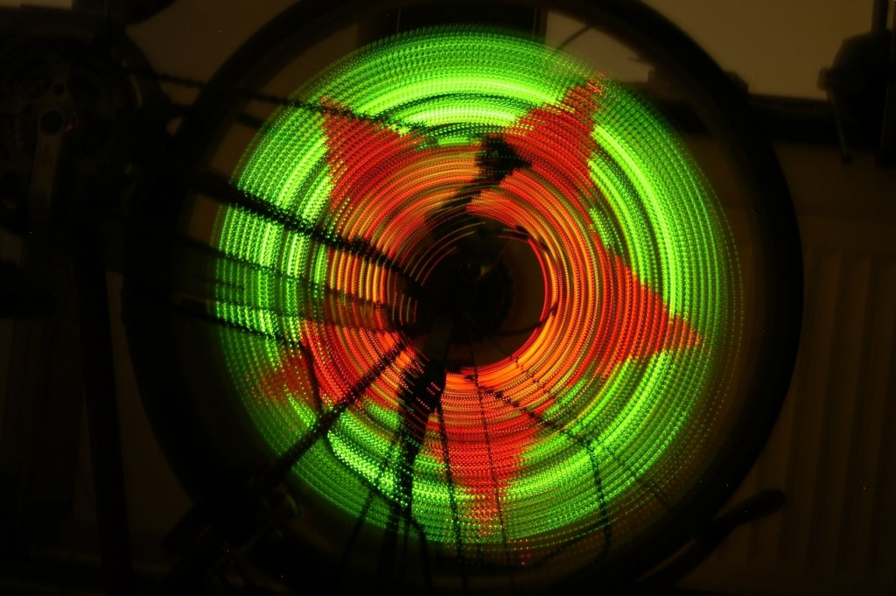
One of the coolest projects I have worked on resulted in the turning of heads when biking through the city, and was also a great challenge as it involves some tricky hardware and software. The result was pretty darn amazing though.
So this was a really cool project that took a lot of my time when I was seventeen years old. Do you know these gadgets that write text in the air? Ever wondered how they work?
It’s pretty simple, actually. There is a row of LED-lights that you swing through the air. Those leds alternate very quickly between on and off, in a very specific pattern. When you move the leds at exactly the right velocity, the pattern will become visible to the human eye, and you can actually read text or see an image.
You are able to see this text because your mind will stitch the images together, like when watching TV. It all happens so fast, that you won’t see the individual frames, but you see the image as a whole. Or in case of the TV, it looks like you’re watching an actual moving scene. This phenomena is called Persistence of Vision (POV), and quite useful when making awesome things. :-)
In theory it’s possible to attach a row of leds to the side your bike, and get the same effect as swinging it through the air. The problem with that is that you have to go fast. Very, very fast. Instead, there is something on the bike that has a much higher velocity than your forward velocity: the angular velocity of the weels.
Depending on the size of the weel and your forward velocity, you’ll get a fair number of rotations per second, enough to make it blurry to the eye. So why not take the row of leds, and put it in the wheel. Sure, you have to do some funky math to get a nice image, but it looks cool, right?!
But of course, it already exists: SpokePOV by the artist/engineer Ladyada (who, by the way, makes very cool things!). Lucky for me, those kits only come in one color. What could be cooler than making a full-color SpokePOV?
After carefully selecting parts – RGB-leds are expensive! – the drawing began. For this I usually use KiCAD, an awesome open-source electronics CAD program.
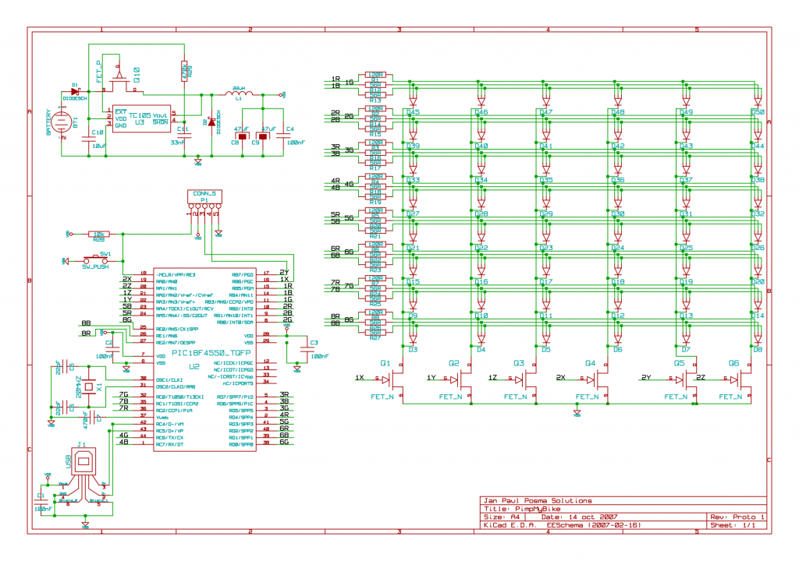
Designing the circuit board was a devilish job. The routing of all the lines to the leds took a lot of time to perfect, not to mention fitting it on a board that is as small as possible. A cool thing about Kicad is that you have an awesome 3d viewer. But a 3d model with missing components kinda sucks, so I drew a few models myself in 3ds Max.
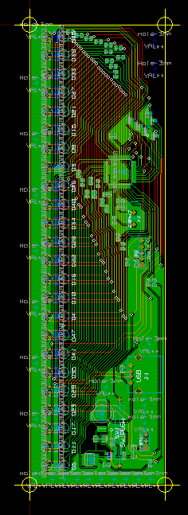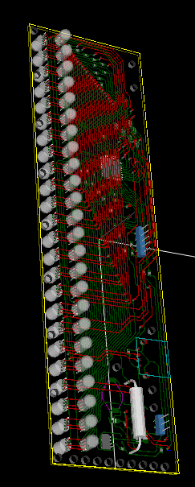
All that done, the schematics were sent to Niels at MakePCB, who also supplied most of the components. And how awesome, a few weeks later an envelope with the circuit boards arrived. A few hours of soldering later, and the hardware was finished.
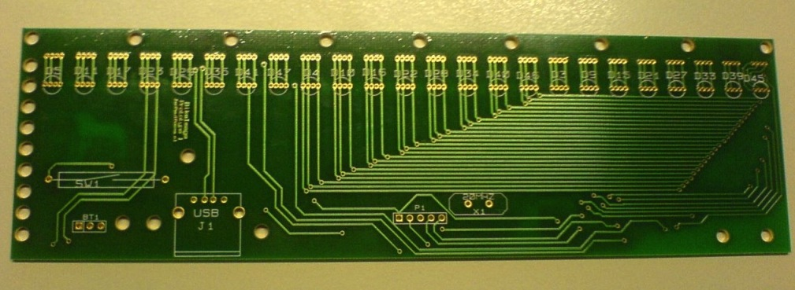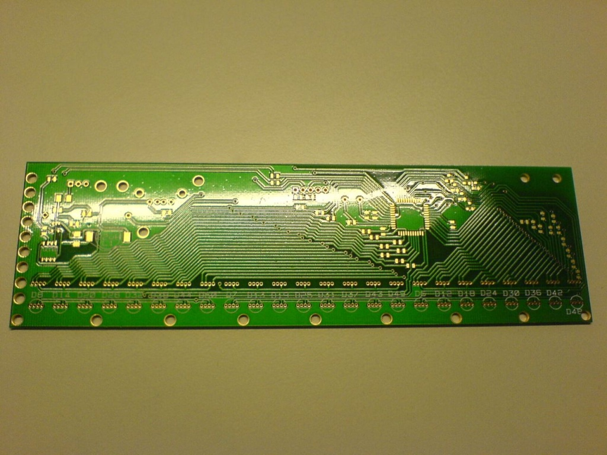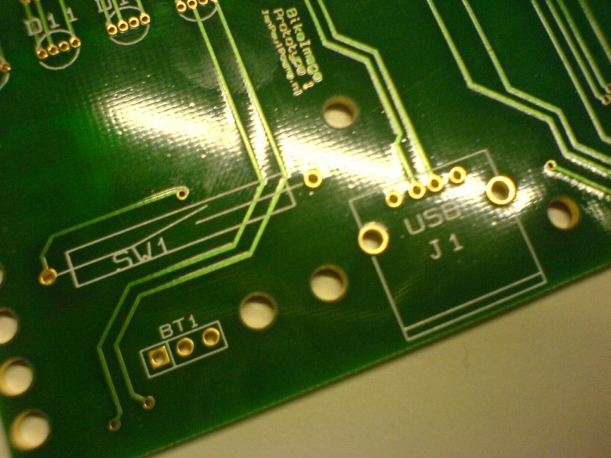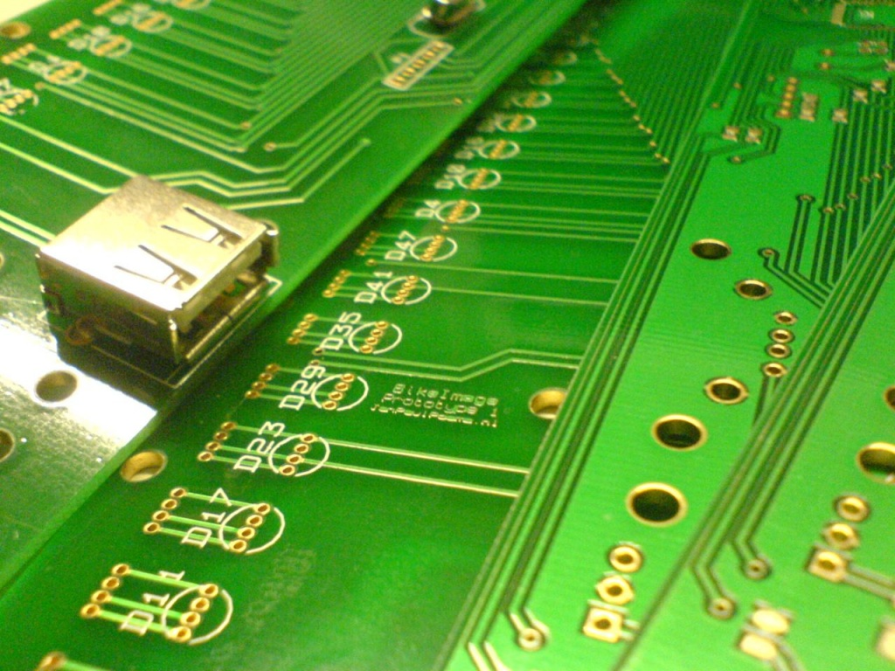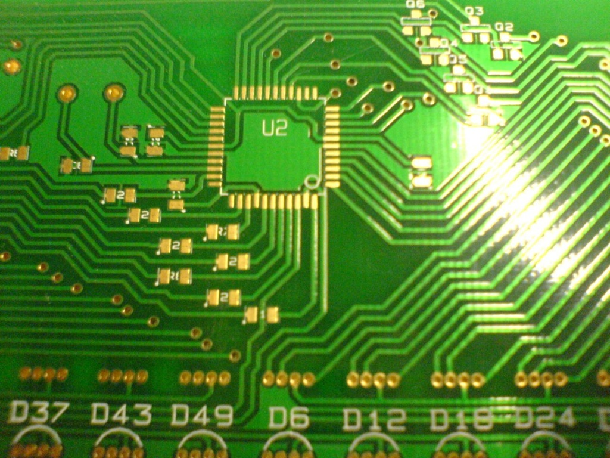
But the hardest part was yet to come: the software. Luckily Microchip supplied an excellent USB bootloader, which I tweaked a bit to use the leds as status indicators. The embedded software is all about performance: it has to be able to keep up with the speed of the weel. Therefore it was necessary to supply the program with an image in a format that is easy to decode, and small at the same time.
First, a computer program in Java converted a normal image to a rotational image using some simple trigonometry. Normally, when composing images, pixel data consists of 3 bytes per pixel: one for each color. Uncompressed, this took way too much space for a small PIC microcontroller. JPEG or PNG compression was not an option: way to complex to decode. So the color data was reduced to 1 byte per pixel: 3 bits for red, 3 bits for green and 2 bits for blue. Why the reduced count for blue? Well, there are 8 bits to the byte, so some color has to go down, and blue is the best choice as the eye is the least sensitive to that primary color.
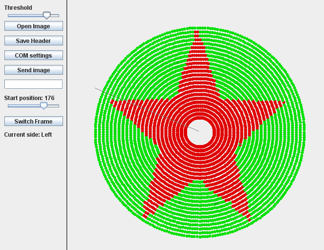
To display the colors some standard techniques are used such as pulse-width modulation (PWM) and LED-multiplexing, which I won’t cover in detail. However, the decoding of the pixel data to 3 bytes is kinda interesting. The C implementation was too slow, so it had to be done by hand, in assembly. Using assembly for this critical piece of code (which is only a few lines long) improved the speed of the whole program by a factor 6.
TBLRDPOSTINC
MOVF TABLAT, 0, ACCESS // Read TABLAT to WREG; WREG = RRRGGGBB
MOVWF CurrentPixel, BANKED // Put WREG in CP (CurrentPixel)
RLNCF CurrentPixel, 1, BANKED // Shift CP to left; WREG = RRGGGBBR
MOVF CurrentPixel, 0, BANKED // Put CP in WREG
ANDLW 0x06 // AND WREG with 0x06; WREG = 00000BB0
MOVWF PWM2_0, BANKED // Put WREG in blue channel
RLNCF CurrentPixel, 1, BANKED // Shift CP to left; CP = RGGGBBRR
RLNCF CurrentPixel, 1, BANKED // Shift CP to left; CP = GGGBBRRR
MOVF CurrentPixel, 0, BANKED // Put CP in WREG
ANDLW 0x07 // AND WREG with 0x07; WREG = 00000RRR
MOVWF PWM0_0, BANKED // Put WREG in red channel
RLNCF CurrentPixel, 1, BANKED // Shift CP to left; CP = GGBBRRRG
RLNCF CurrentPixel, 1, BANKED // Shift CP to left; CP = GBBRRRGG
RLNCF CurrentPixel, 1, BANKED // Shift CP to left; CP = BBRRRGGG
MOVF CurrentPixel, 0, BANKED // Put CP in WREG
ANDLW 0x07 // AND WREG with 0x07; WREG = 00000GGG
MOVWF PWM1_0, BANKED // Put WREG in green channel
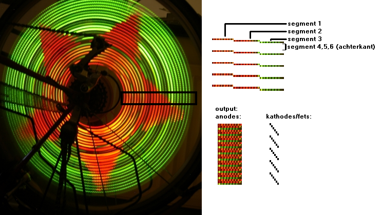
The algorithm of the program is pretty simple: take the time of one complete cycle (360 degrees). This time is measured by using a magnetic switch, with a magnet on the frame on the bike. The time is divided by 256, and a timer is set to fire a function. This function will take the next pixels, decode the colors for all the leds (on the front and on the back of the device), and feed this color to the leds using PWM and multiplexing. Result: people watching you as you go down the street at night. Mission accomplished.
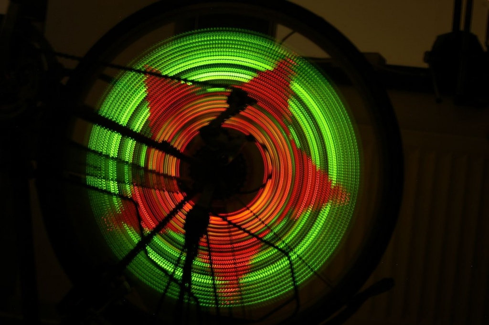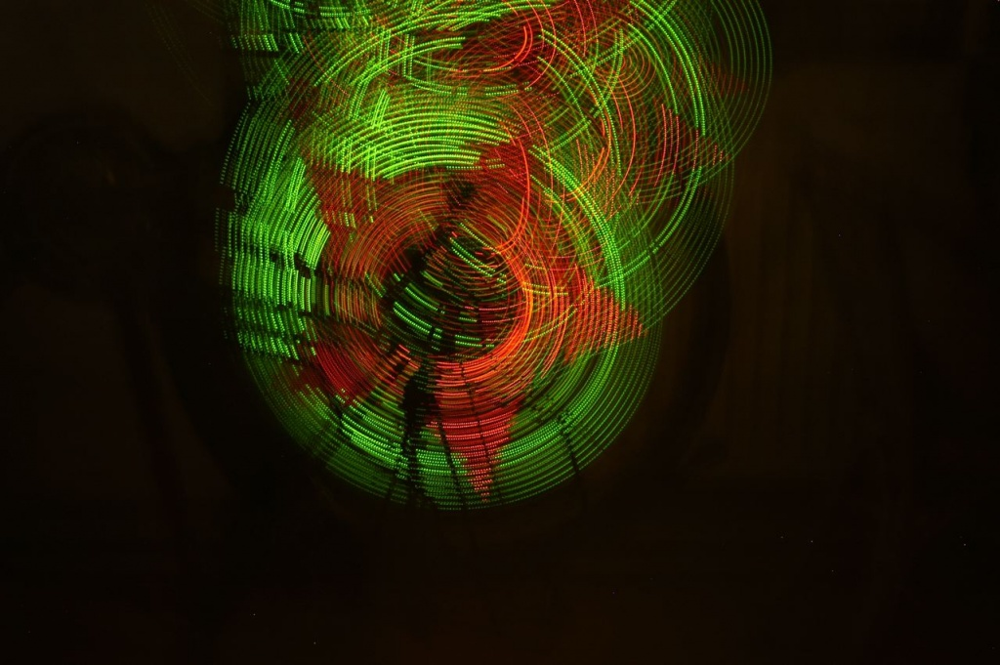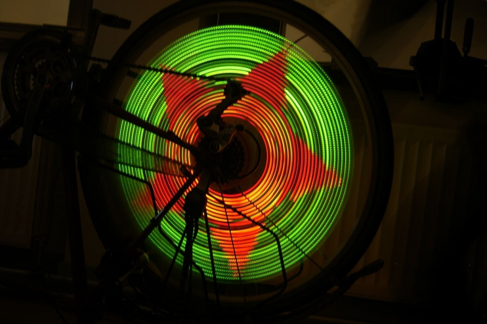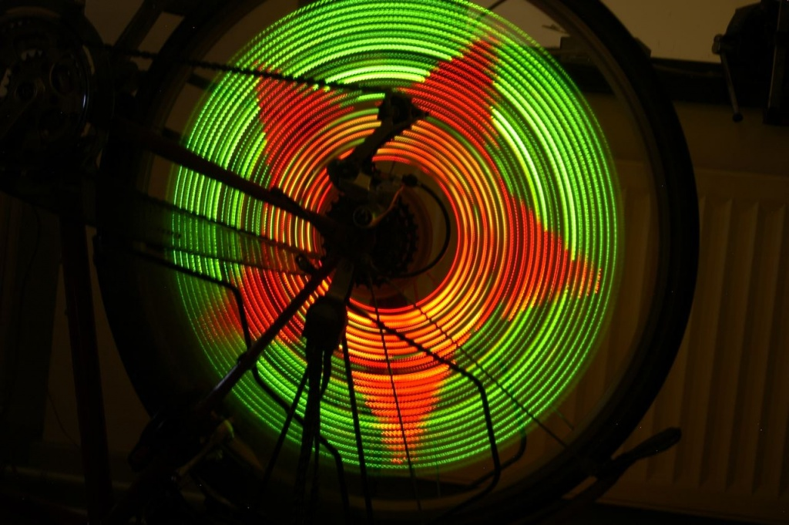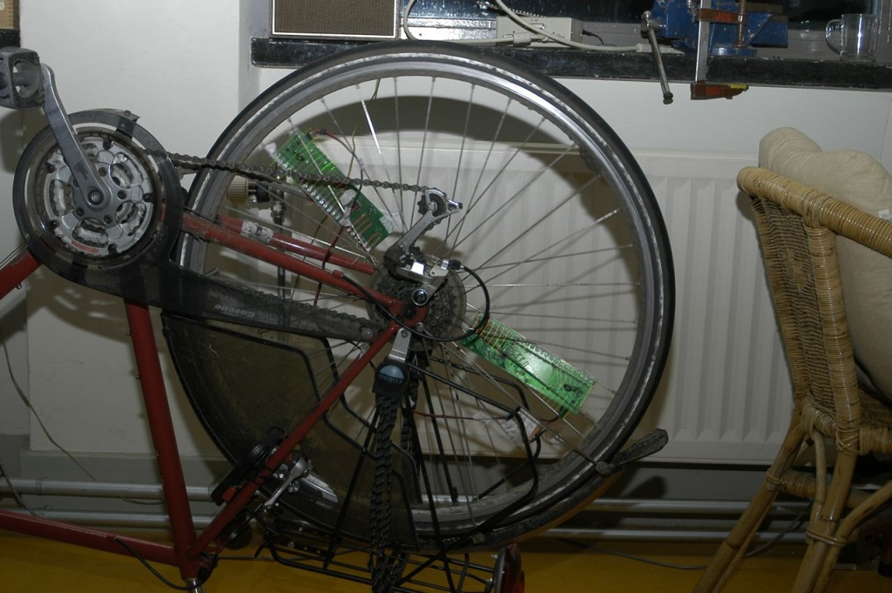
As you can see on the photos, I ended up mounting two boards on the wheel. Otherwise you had to drive quite fast.. The synchronization of the two boards happens automatically, because they will both align to the magnet. Except when accelerating or slowing down, both boards remain in sync quite well.
I managed to get this project approved as an assignment for school (‘profielwerkstuk’), so the documentation is quite extensive. It can provide an interesting read if you like to know more about the used components, programs and techniques. You’ll also read about some major design decisions. It’s only available in Dutch though.. Download.
There are still a few un-soldered boards laying around here, as well as all the hardware designs and software code. However, I won’t post it here as many things are unfinished and not at all ready for production. Also, the parts are pretty expensive, especially when taking into consideration you need at least two boards per wheel. If you’re interested though to take this to the next level though, feel free to contact me and we can talk about it. But be warned: a lot of work needs to be done to have it work really well.
Update: it seems that around the time I built this, some other guys also got the idea and commercialized it. Their simple version does not support images or synchronization of the units, but looks awesome nevertheless. Their pro version is very cool and even supports animations and on-the-fly wireless programming but is priced at thousands of dollars. It seems though, they have done a great job! :-)